Em uma frase: os itens 1 e 2 funcionam na janela de verdade e estão PRONTOS PARA CONFERIR. O item 3 NÃO ESTÁ PRONTO, por dois defeitos. Primeiro: quando a linha nova "Pedaço:" aparece, ela espreme as linhas de botões da aba Marcar, em qualquer tamanho de janela, e o texto de todos os botões fica cortado ao meio, inclusive o do botão novo. Segundo: num pedaço de texto (justamente o caso do item 1), o aviso diz "47%" e o botão corta o título, a primeira pergunta, a última linha e metade de palavras nas beiradas. Na pintura da Escola 7, o aviso e o botão fazem o que prometem.
Defeito conhecido (decisão do Samuel, 28/09): moldura dourada e iluminura continuam sendo defeito conhecido até a Fase 1 ficar pronta (itens 1.2, 1.4 e 1.5). Nada disto mexe nelas.
Ramo pedaco-e-salvo-2-2026-10-05 (worktree consertos3, último commit 17d705b), comparado com 19c1ba7. Eu não mudei código nenhum.
pytest inteiro na worktree e teste_botoes.py numa cópia do 17d705b (ver abaixo). Comparação ponto a ponto dos PDFs gerados na janela com o mesmo projeto processado pelo 19c1ba7. Uma conferência própria de 6 páginas × 4 filtros contra o 19c1ba7.LOCALAPPDATA e a pasta do usuário trocadas), nunca a real. Os scripts do piloto vieram dos pareceres anteriores (só lidos lá) e estão em scripts/.livro-teste.pdf, com 3 folhas copiadas do gabarito (Escola de Jesus 7, Boécio 3, Palatino 5), "Dividir folhas ao meio" desligado. Para o "(2)" num livro novo, um segundo livro, livro-dois.pdf (Boécio 3).erros.log da pasta de dados de teste nunca chegou a existir.triagem.py com 7 processos e mais dois pytest). A memória virtual livre chegou a 0,4 GB de 41 GB, e a primeira tentativa de abrir a janela falhou por "arquivo de paginação muito pequeno". Isso explica as falhas do pytest (abaixo) e torna os tempos medidos pouco confiáveis.| O quê | Resultado |
|---|---|
pytest tests inteiro (65 min, PC carregado) |
1442 passaram, 7 falharam, 1 erro, 7 pularam |
As 7 falhas e o erro, rodados de novo sozinhos (test_cartoes_e_previas, test_paginas_em_outro_processo, test_sem_janela_na_tela, test_teste_velocidade::test_enter_guardado_some_de_verdade) |
22 de 22 passaram (21 s). Eram tempo esgotado e servidor de páginas que caiu por falta de memória. Nenhum é destes itens |
Os 4 arquivos de teste novos (test_so_neste_pedaco_no_original, test_antigo_aberto_vira_pronto, test_ajustar_pedaco, test_ajustar_pedaco_na_aba_marcar) |
38 de 38 passaram |
| Os 7 que pularam | 6 do Kraken ("motor do Kraken não montado": o motor fica fora do git) e 1 que só roda com OCR_22=1. Iguais aos do implementador |
teste_botoes.py |
132 ações, 0 falhas. Rodei numa cópia do 17d705b (git archive) na minha pasta temporária, com a pasta saida_teste própria e modelos só lido. O saida_teste\botoes de verdade não foi tocado (última mudança 16:25, antes desta conferência) |
6 páginas × 4 filtros, 19c1ba7 × 17d705b, pelo caminho do "Confirmar e processar" |
24 de 24 idênticas, ponto a ponto (ver item 4) |
Na aba Marcar, página 1 (Escola 7) em Original, cliquei "só neste pedaço: Preto e branco" e desenhei, com o mouse nativo, um retângulo em volta do bloco de texto de cima, do título até "E Deus disse: Faça-se tudo" (de 0,018 × 0,011 a 0,994 × 0,372 da página).
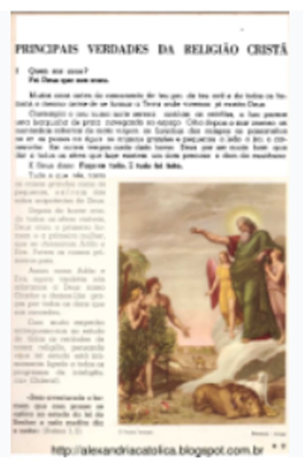
19c1ba7, que ignora o pedaço e por isso dá o Original puro:19c1ba7, ponto a ponto;À esquerda o Original (19c1ba7), à direita o PDF da janela:
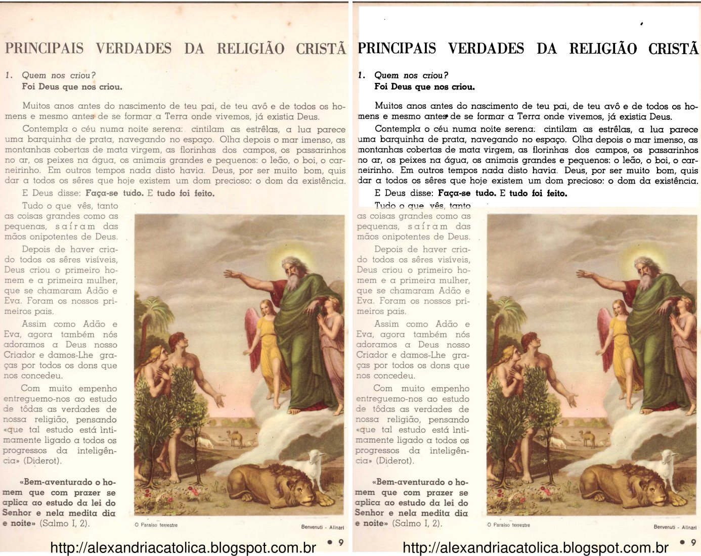
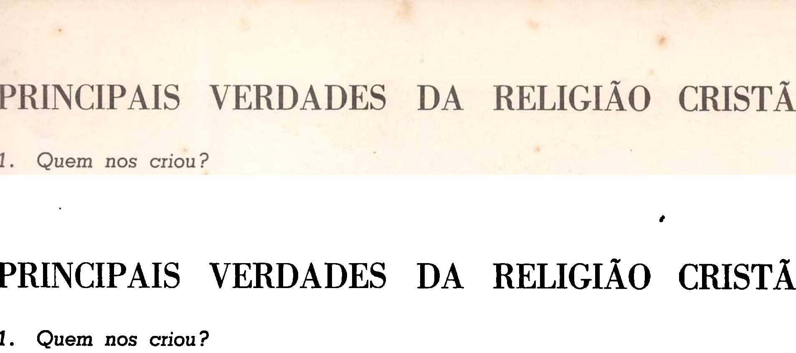
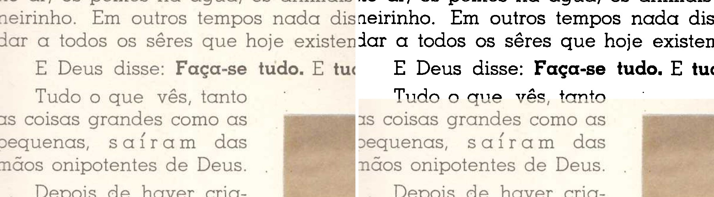
O que eu vi: o título, a pergunta e os dois parágrafos saem pretos e nítidos sobre papel branco. A pintura, a coluna da esquerda e a legenda ficam iguais ao Original. Na beirada de baixo, o meu retângulo passou no meio da linha "Tudo o que vês, tanto": a metade de cima dela saiu em preto e branco, e a de baixo creme. Não é defeito do programa: a borda é a que eu desenhei, como o Samuel decidiu ("do mesmo jeito"). Mas mostra que, num texto, um retângulo desenhado à mão corta linha com facilidade.
Fiz duas vezes, com o arquivo antigo seguro de verdade por outro processo (um open() do Python, que no Windows impede trocar ou apagar o arquivo, como um leitor de PDF faria; não usei o leitor do Samuel). Antes de clicar, conferi que o arquivo estava mesmo preso ("O arquivo já está sendo usado por outro processo").
| Caso | O que aconteceu |
|---|---|
Livro que já tinha PDF (livro-teste): "Confirmar e processar" > "Processar" > caixa "Já existe" > "substituir o antigo" |
"Ficou pronto!" com o nome "livro-teste - original (2).pdf" e a frase "O arquivo antigo, "livro-teste - original.pdf", estava aberto em outro programa (o leitor de PDF, por exemplo) e não pôde ser substituído. Ele ficou como estava, e o PDF novo foi salvo ao lado dele com o nome acima." Nenhuma caixa de erro. O antigo ficou intacto (mesmo sha256 66ae5eff…, 17:38:11). O "(2)" tem 3 páginas e as mesmas imagens do PDF anterior |
Livro novo (livro-dois, primeiro PDF dele; um arquivo com o nome padrão já existia e estava preso) |
Igual: "Ficou pronto!", nome "(2)" e a frase. O cartão novo apareceu como "pronto, PDF gerado". Este é o teste que importa para o cartão, porque o livro-teste já estava "PDF gerado" de antes |
Reabrir o livro-teste pelo cartão > "Confirmar e processar" |
O nome do arquivo veio "livro-teste - original (2).pdf". O destino guardado no projeto.json, no resumo.json e no historico.json também é o "(2)" |
| Processar de novo, sem nada preso (substituindo o "(2)") | "Ficou pronto!" sem a frase: a do livro anterior não sobrou |
erros.log da pasta de dados de teste |
Não existe (nada foi gravado em nenhum momento) |
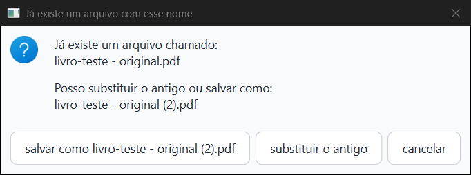
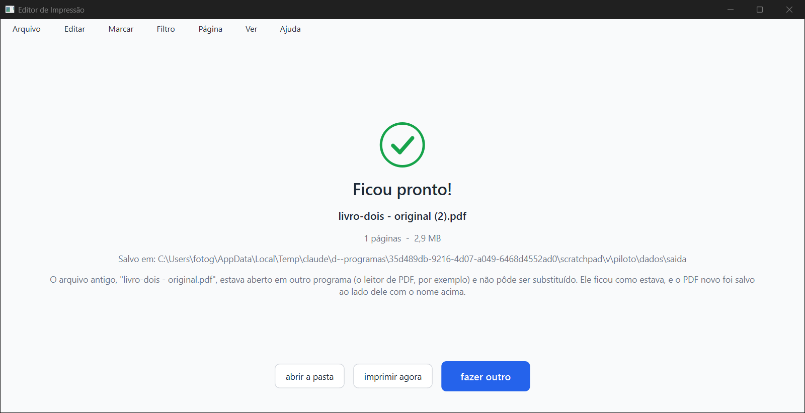
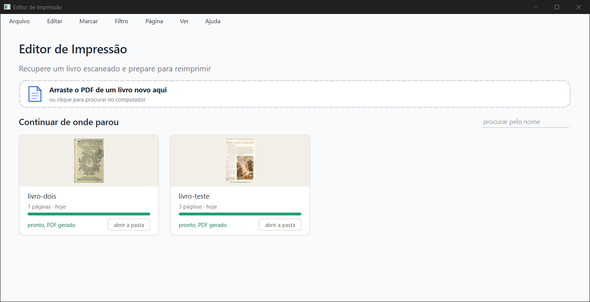
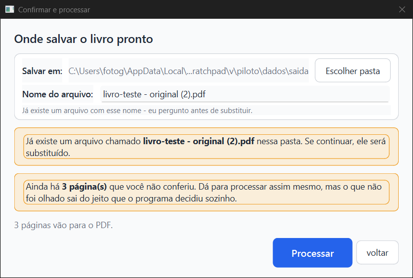
A frase é clara e está em português correto. Pequeno, antigo e fora deste item: no livro de uma página, a tela diz "1 páginas" (no "Ficou pronto!" e no cartão).
Página 1 em Preto e branco, "só neste pedaço: Original", e um retângulo com bastante folga em volta da pintura, pegando a linha de texto de cima, a beira da coluna da esquerda e as duas legendas (de 0,344 × 0,345 a 0,994 × 0,966).
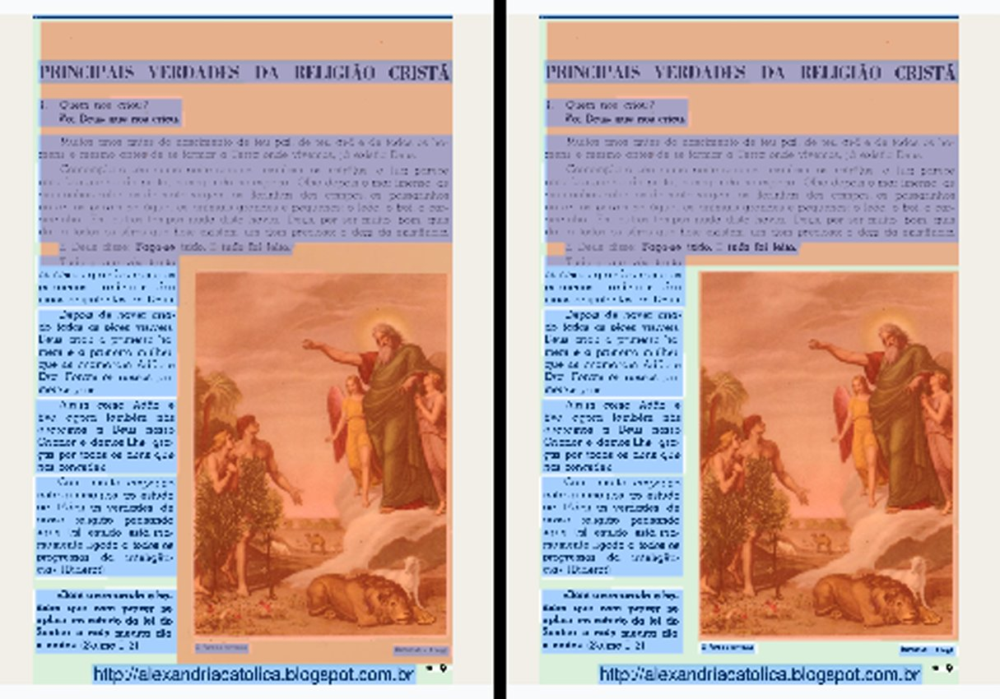
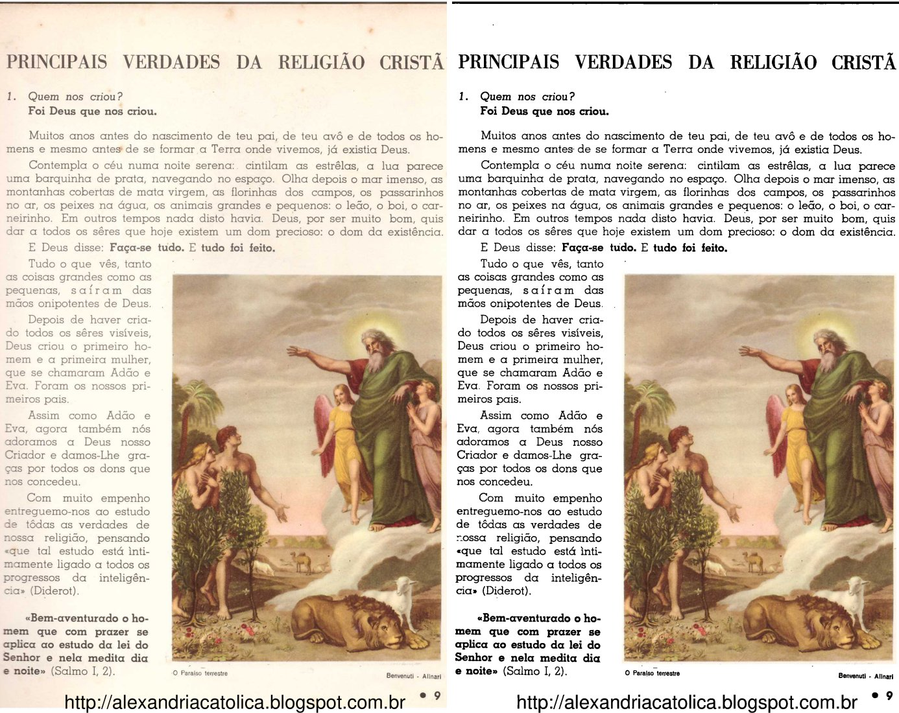
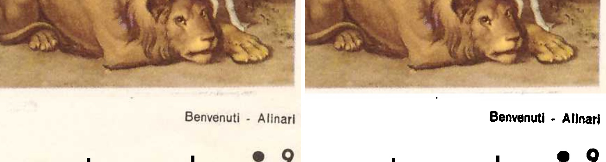
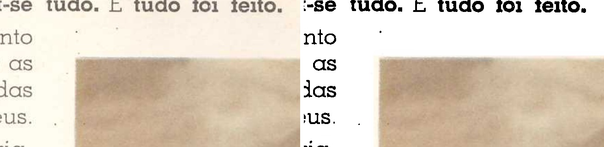
Prints da tela: prints/18-marcar-folga-aviso.png (aviso), 19-marcar-ajustado.png, 20-marcar-desfeito.png, 21-marcar-refeito.png, 22-marcar-justo-a-mao.png.
Em 1280 × 657 pontos, sem a linha "Pedaço:", os botões de "Marcação:" e "Foto:" aparecem inteiros. Quando a linha aparece, as três linhas de botões ficam achatadas e o texto de todos eles sai cortado ao meio: "detectar automaticamente", "usar em todas", "só nas próximas" e o próprio "Ajustar o pedaço à figura", que fica ilegível. O botão novo tem 24 pontos de altura, mas precisa de 39.
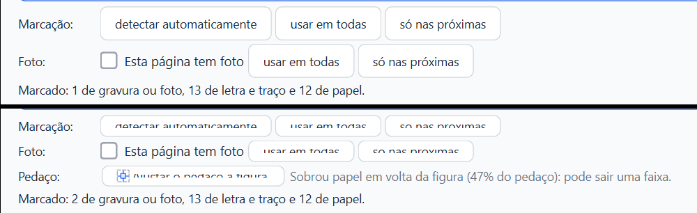
Não é a janela baixa. Abri a mesma tela em 1920 × 1040 pixels: com a linha "Pedaço:" os botões continuam cortados, e a área da página cresce sozinha. Na página 2 (sem pedaço), no mesmo tamanho, os botões ficam inteiros. Então a culpa é da linha nova, que não ganha espaço próprio. O implementador viu o corte no print de 760 de altura e achou que fosse a janela baixa, mas o corte vem da linha.
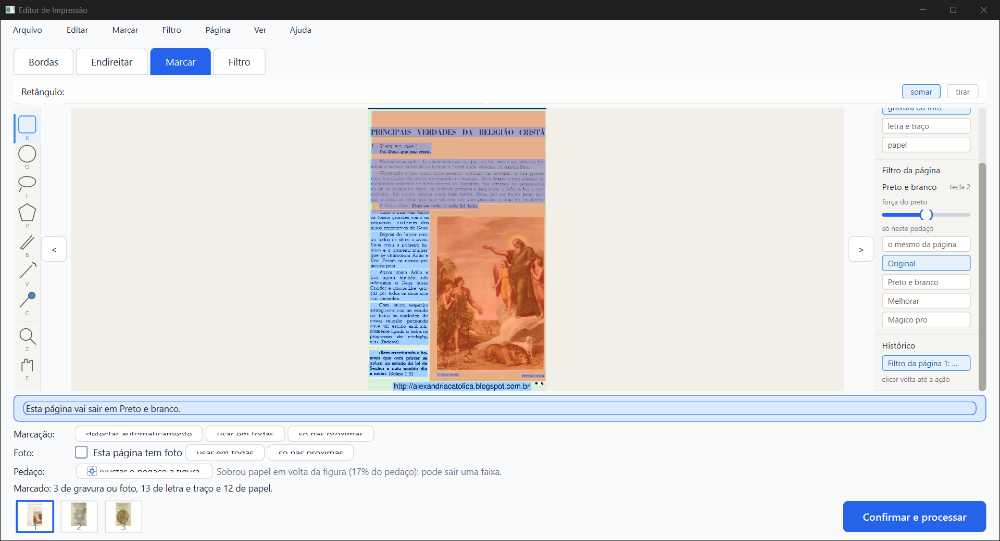
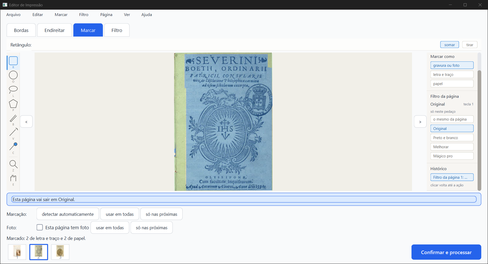
É o caso do item 1: página em Original, bloco de texto de cima em "só neste pedaço: Preto e branco". O retângulo pegava o bloco inteiro, com pouca folga.
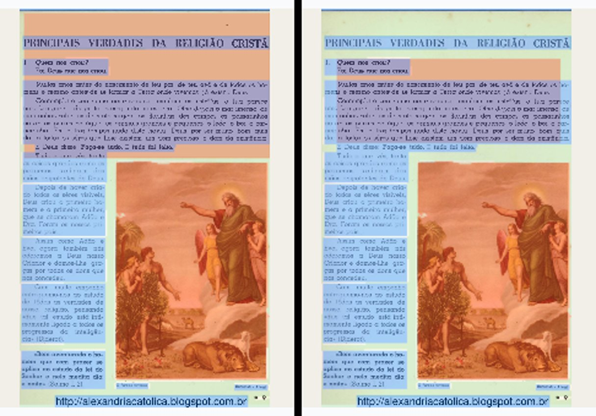
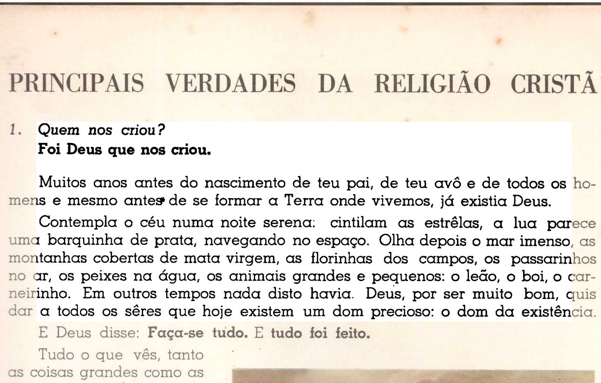
O relatório do implementador diz que, na faixa branca do item 1, "o botão também vale aí: ele encolhe até o bloco de texto". Na janela, não foi isso o que aconteceu. Ele corta o texto. Dá para desfazer (testei: Ctrl+Z devolveu o retângulo), mas o aviso de 47% faz o Kaique clicar. O resultado só se percebe olhando de perto.
Mais duas coisas que vi:
O que fazer não é decisão minha. Ideias para o Samuel escolher: mostrar a linha só para pedaço marcado como "gravura ou foto" e pedir "letra e traço" para texto; ou não sugerir nada quando a tinta forma muitos grupos parecidos (linhas de texto); ou ajustar só o pedaço selecionado.
Usei o comparacao-32-paginas.json do implementador (128 de 128 idênticas) só como referência. Fiz a minha conferência, menor: 6 páginas-gabarito × 4 filtros (Escola 7, Opus Majus 20, Horas 11, Palatino 57, Graduale 221, Siebmacher 7), pelo caminho do "Confirmar e processar" (o rodar_32.py do implementador, sem mudança). Uma cópia inteira do 19c1ba7 contra uma cópia do 17d705b, uma de cada vez.
| Filtro | Idênticas | Tempo de processar as 6 (antes → agora) |
|---|---|---|
| Original | 6 de 6 | 47,0 → 27,7 s |
| Preto e branco | 6 de 6 | 46,4 → 33,2 s |
| Melhorar | 6 de 6 | 56,9 → 51,8 s |
| Mágico pro | 6 de 6 | 55,1 → 66,9 s |
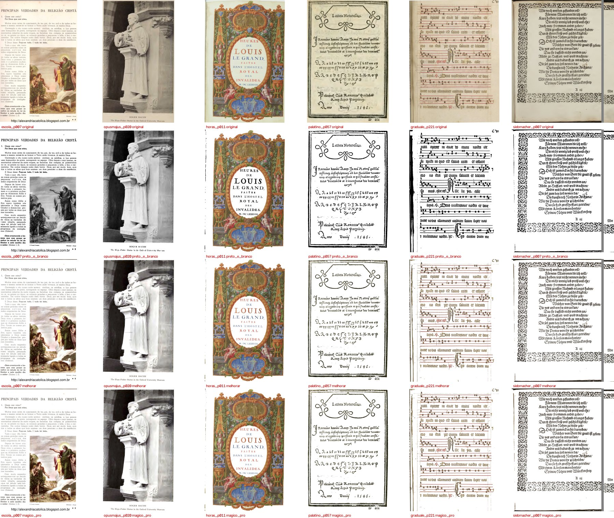
O que eu vi nas 24: todas saíram e estão como o filtro manda. Original igual ao scan, Preto e branco em preto puro, Melhorar e Mágico pro com papel branco e cor. A Horas 11 no Preto e branco mantém a iluminura colorida, que é o defeito conhecido e a opção desmarcada. Os tempos não valem como medida: o PC estava sem memória e com outros agentes. O Mágico pro "agora" saiu 21% mais lento, e os outros três mais rápidos, o que é ruído. As imagens são idênticas, então o caminho é o mesmo.
O teste oficial (teste_velocidade.py) não foi rodado: ele pede o PC parado, e o PC estava com outros agentes e sem memória. Indicação só: as 24 páginas acima são idênticas antes e depois. Na janela, um livro de 3 folhas foi processado em 5 a 14 s, conforme a carga do PC.
prints/17-filtro-pb-ajuste-espremido.png). O código da aba Filtro não mudou neste ramo.scratchpad\v\piloto\dados\saida e piloto\comparar).cmp-linhas-04-vs-05.png, 23-…, 24-…).cmp-texto-antes-depois-ajuste.jpg, item3b-texto-ajustado-no-pdf.jpg).18-marcar-folga-aviso.png).17-filtro-pb-ajuste-espremido.png).relatorios/conferir/pedaco-em-original-2026-10-05/verificador/parecer-verificador-pedaco-em-original-e-salvo-2.html (e .md, .pdf).verificador/prints/. Números: verificador/comparacao-6x4.json e prints/comparacao-item1.json. Scripts do piloto e das comparações: verificador/scripts/.Editor de Impressão · gerado em 05/10/2026 às 18:32